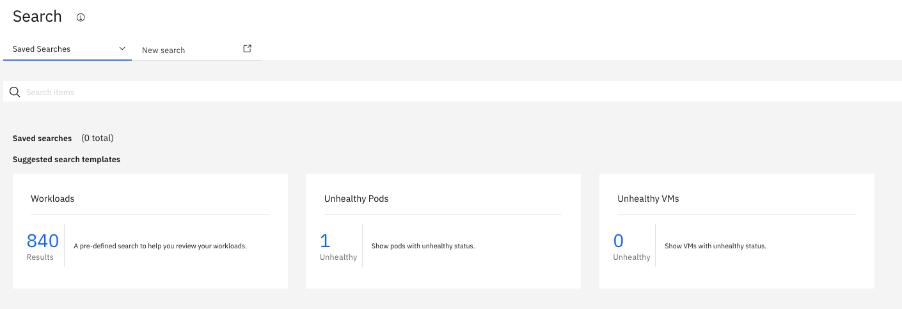
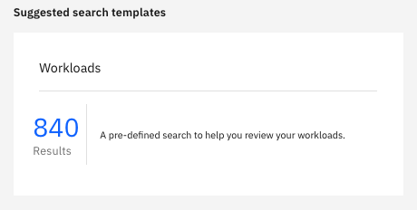
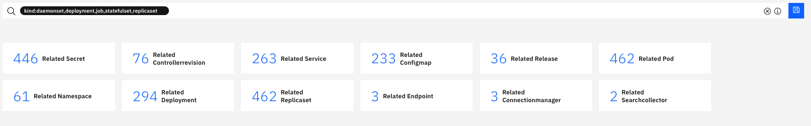
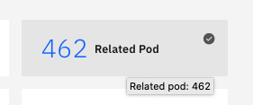
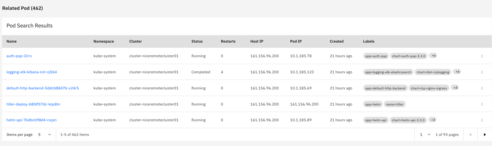
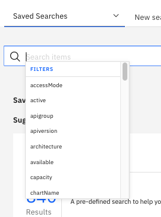
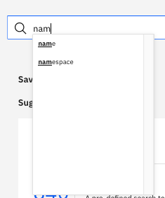
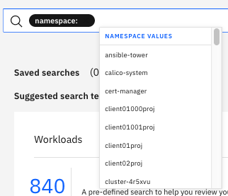
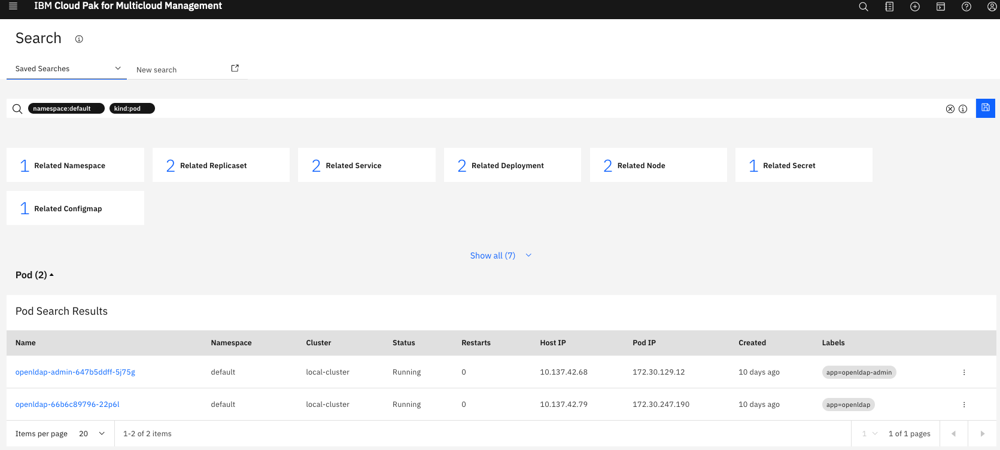
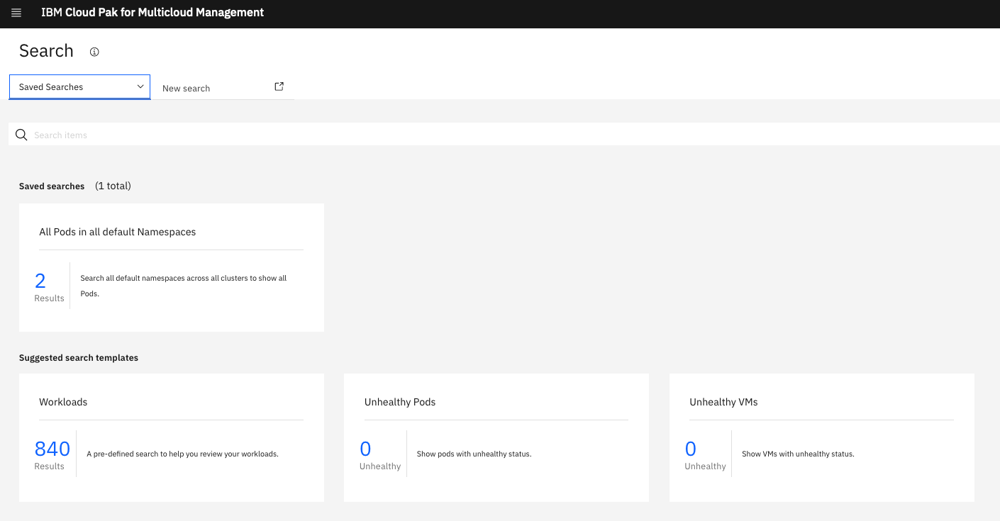

Lab 5: Find resources on multiple clusters
Lab 5 - Find resources on multiple clusters
One feature that is very interesting in CP4M is the search feature (loop) on the top right part of the screen:
When you click on that feature, you see some predefined search that are very interesting for everyday:

Especially the workloads first search is very popular, then click on the tile:

The findings are shown:

What is important to notice, the search is executed across all clusters ! And the answer is very quick.
You can then select the tile related to all pods across all clusters :

Results:

Another feature is the filtering of different values. First go to the search zone:

Start to type name and choose namespace in the filtering list:

This should result to this (a long list of all namespaces across clusters):

Pick the default namespace in the list and continue with kind:pod then you sould see all the pods running on all clusters in the default namespaces:

Now you can save your search by clicking the blue diskette:

Congrats
You successfully accessed the CP4M console, you imported a new clusted that has been already created, you deployed an application across clusters, you installed the cloudctl command line, and you touched all the main features including the seach function.
Thanks.